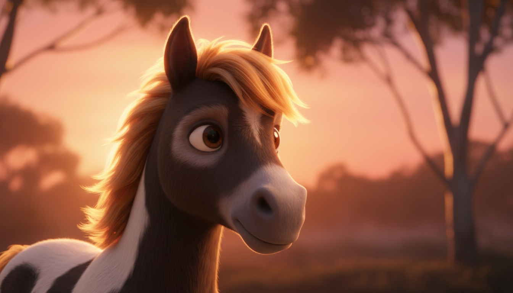
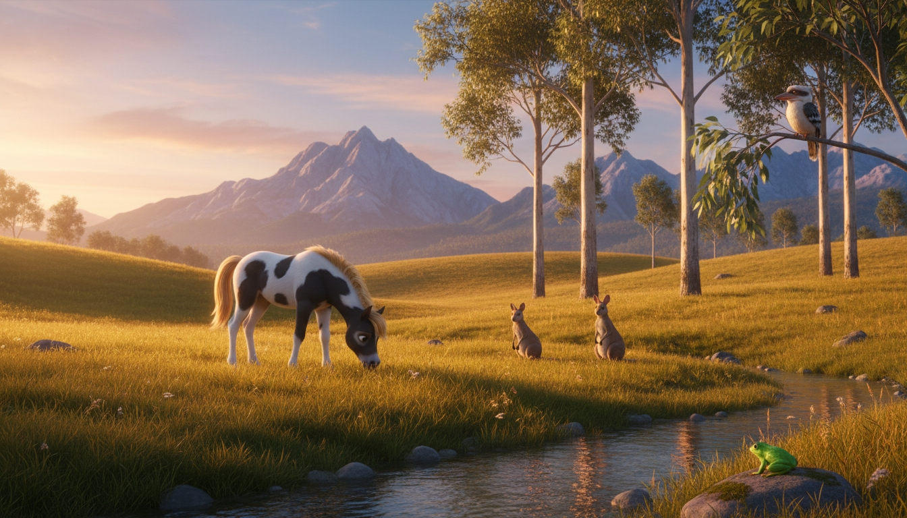

Growing Strong & Wild

Finding Calm
How to calm down when emotions feel overwhelming. Simple tools for little ones to find their ground.

The Senses
Discovering amazing Australian wildlife and beautiful landscapes through sight, sound, and touch.

Making Friends
The power of friendship, kindness, and helping others. Join Kozy the Koala and Kippie the Kangaroo!